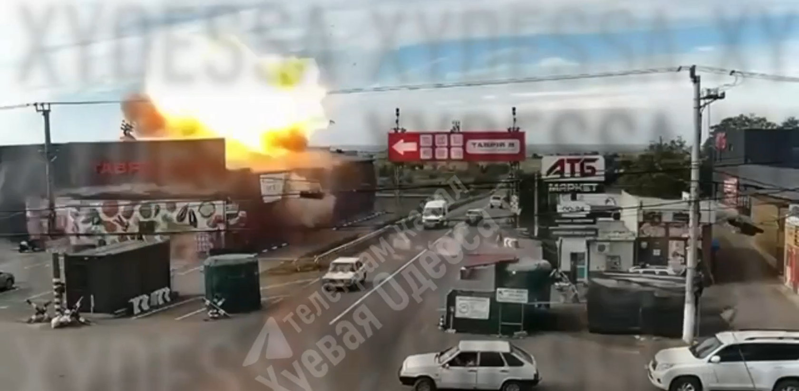

Tavria V supermarket ablaze after reported Shahed strike
Video circulating on Odesa Telegram channels shows a fire at the Tavria V supermarket in Mayaky after what local reports describe as a Shahed strike. Antikor reported an impact on the supermarket and a fire. Its initial report said information about casualties and the extent of the damage was not yet available.
